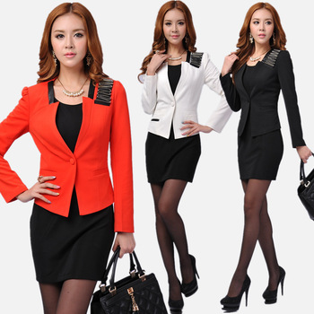

Fall Work
With a business casual wardrobe, you have a little more wiggle room to create more stylish options in comparison to a conservative style aesthetic. Investing in structured blazers, tapered trousers, and standard blouses should be the foundation to building a solid wardrobe. From there, add on stylish footwear and structured handbags to accent your everyday look.
Best outfit ideas for 2013:Fashion is a general term for a popular style or practice, especially in clothing, footwear, and accessories. Fashion refers to a distinctive style in which a person dressed or refers to the newest creations of textile designers. This website is going to show different outfits that women can wear for any of the seasons this 2013 year. Of course everyone has their own style and cna dress however they wish, but these are the top outfits you will see people wearing this year. Hope you enjoy!